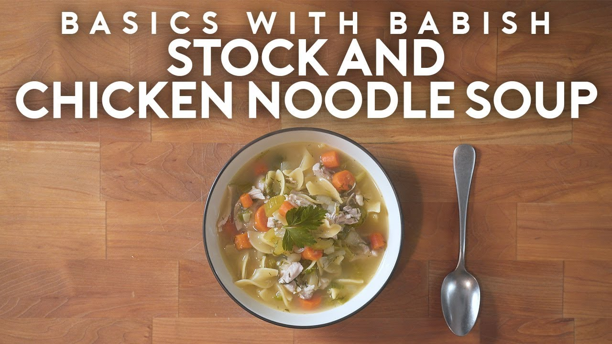

Return to main page
Chicken Noodle Soup

One of the most popular varieties of soup, Chicken Noodle Soup is simply made with egg noodles and bits of chicken cooked in a chicken stock.
What you need:
- Celery, Parsnip, Turnip, Carrots
- Onions
- Parsley
- Ginger
- Lemongrass
- Fresh Dill
- Scallions
What you need to do:
- Begin by roughly chopping celery, carrots, a finely chopped parsnip and turnip and place into a bowl.
- Separately chop an onion and set to the side.
- In a large pot, heat some oil over medium-high heat until shimmering then add the onions. Saute until softened.
- Add the rest of the vegetables and warming through before adding stock. Over high heat bring to a simmer.
- While coming up to a simmer, add in chopped parsley, grated ginger and lemongrass.
- Once boiling, add in the chicken thighs and skim off any fat that rises to the surface as it cooks.
- After 15-20 minutes, remove the chicken and shred using a pair of forks before adding back to the pot.
- Right at the end add fresh chopped dill along with minced scallions. Cook for no more than 1 minute. Season with salt
- In a medium pot, add a few ladles full of the soup along with some noodles season with salt until cook until noodles are finished. Season with salt as necessary.
Return to main page